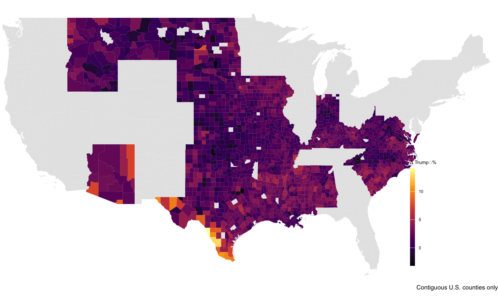

MP04 Submission: Exploring Recent US Political Shifts
Author
Jeanne Lin
Introduction
In this mini‑project we fuse spatial boundaries with scraped election returns to chart how U.S. presidential voting patterns changed between 2020 and 2024. By pairing county shapefiles from the U.S. Census Bureau with county‑level results scraped from Wikipedia, we’ll answer seven focused questions about vote totals, share shifts, turnout dynamics, and geographic scale.
Task 1: County Shapefile Preparation
Acquire and ready a high‑resolution county boundary shapefile. How it’s constructed:
- Downloaded the CB_2023_us_county_500k.zip from the Census Bureau.
- Extracted the .shp (and associated files) into data/mp04.
- Loaded it with the sf package and joined on a small STATEFP→state lookup table.
Findings:
All 3,142 counties (and equivalents) are present in a single sf object, each tagged with its state name, ready for spatial joins.
Code
# 1. Set up the directorydata_dir <-"data/mp04"if (!dir.exists(data_dir)) {dir.create(data_dir, recursive =TRUE, showWarnings =FALSE)}# 2. Define URLs and file paths# Finest resolution (1:500k) county boundaries for 2023zip_url <-"https://www2.census.gov/geo/tiger/GENZ2023/shp/cb_2023_us_county_500k.zip"zip_file <-file.path(data_dir, basename(zip_url))shp_file <-file.path(data_dir, "cb_2023_us_county_500k.shp")# 3. Download the ZIP if not already presentif (!file.exists(zip_file)) {message("Downloading county shapefile (500k resolution)...")download.file(url = zip_url,destfile = zip_file,mode ="wb")}# 4. Unzip the shapefile components if the .shp isn't already thereif (!file.exists(shp_file)) {message("Extracting shapefile components...")unzip(zip_file, exdir = data_dir)}message("County shapefile is ready in ", data_dir)
Task 2: Scrape 2024 Election Results
Pull county‑level 2024 presidential vote totals for every state. How it’s constructed:
- Built a reusable R function using httr2, rvest, xml2, and janitor.
- Cached each state’s Wikipedia HTML in data/mp04/wiki/.
- Parsed tables, identified the one containing a “County/Parish/Borough/Census area” column, cleaned names, and parsed numbers.
- Combined all states into all_results_2024.
Findings:
The resulting data frame contains vote counts and percentages for each candidate and each county, with stray header rows automatically dropped.
Code
#Task 2 Acquire 2024 US Presidential Election Results# Install & load all needed packagesneeded <-c("httr2", "rvest", "xml2","dplyr", "stringr", "readr","purrr", "janitor", "tibble")for(pkg in needed) {if (!requireNamespace(pkg, quietly =TRUE)) install.packages(pkg)library(pkg, character.only =TRUE)}# 1. URL‑ready state namesstates <-c("Alabama","Alaska","Arizona","Arkansas","California","Colorado","Connecticut","Delaware","Florida","Georgia","Hawaii","Idaho","Illinois","Indiana","Iowa","Kansas","Kentucky","Louisiana","Maine","Maryland","Massachusetts","Michigan","Minnesota","Mississippi","Missouri","Montana","Nebraska","Nevada","New_Hampshire","New_Jersey","New_Mexico","New_York","North_Carolina","North_Dakota","Ohio","Oklahoma","Oregon","Pennsylvania","Rhode_Island","South_Carolina","South_Dakota","Tennessee","Texas","Utah","Vermont","Virginia","Washington","West_Virginia","Wisconsin","Wyoming")# 2. Scraper function for one stateget_state_results <-function(state) { safe <-str_replace_all(state, " ", "_") url <-paste0("https://en.wikipedia.org/wiki/2024_United_States_presidential_election_in_", safe ) cache_dir <-"data/mp04/wiki" cache_file <-file.path(cache_dir, paste0("2024_", safe, ".html"))# ensure cache dirif (!dir.exists(cache_dir)) dir.create(cache_dir, recursive =TRUE)# download onceif (!file.exists(cache_file)) {message("Downloading ", state) resp <- httr2::request(url) |> httr2::req_perform() readr::write_file(httr2::resp_body_string(resp), cache_file) }# parse the saved HTML page <- xml2::read_html(cache_file) tables <- page %>% rvest::html_nodes("table") %>% rvest::html_table(fill =TRUE)# drop empty tables tables <- purrr::keep(tables, ~nrow(.) >0&&ncol(.) >0)# identify which table has a County/Parish/Borough/Census area column has_county <- purrr::map_lgl(tables, ~any(stringr::str_detect(names(.),regex("County|Parish|Borough|Census area", ignore_case =TRUE) )) )if (!any(has_county)) {warning("No county‑level table found for ", state)return(tibble::tibble(state =str_replace_all(state, "_", " "),county =character(),.rows =0 )) } tbl <- tables[[ which(has_county)[1] ]]# drop a stray header row if its first cell is "#"if (as.character(tbl[[1]][1]) =="#") { tbl <- tbl[-1, ] }# clean names, rename the county‑equivalent column to 'county' tbl <- tbl %>% janitor::clean_names() county_col <-names(tbl)[str_detect(names(tbl),regex("county|parish|borough|census_area", ignore_case =TRUE) ) ][1] df <- tbl %>%rename(county =all_of(county_col)) %>%# unify namefilter( # drop any leftover header labels!is.na(county),!tolower(county) %in%c("county","parish","borough","census area") ) %>%mutate(across( # parse all vote columns-county,~ readr::parse_number(as.character(.)) ),state =str_replace_all(state, "_", " ") # add state label )return(df)}# 3. Fetch & combine all statesall_results_2024 <- purrr::map_dfr(states, get_state_results)# 4. Inspectdplyr::glimpse(all_results_2024)
all_results_2024 <- all_results_2024 %>%select(-matches("^1$")) %>%# drop that stray “1” column if it existsrename(harris_votes = kamala_harris_democratic,harris_pct = kamala_harris_democratic_2,trump_votes = donald_trump_republican,trump_pct = donald_trump_republican_2,other_votes = various_candidates_other_parties,other_pct = various_candidates_other_parties_2,margin_votes = margin,margin_pct = margin_2,total_votes = total, )
Task 3: Scrape 2020 Election Results
Repeat the above for the 2020 presidential election. How it’s constructed:
- Reused much of the Task 2 function, pointing to wiki2020/ and renaming fields to match 2024’s structure.
- Saved results in all_results_2020.
Findings:
A parallel dataset for 2020, allowing direct county‑by‑county comparisons across the two elections.
Code
#Task 3 2020 Acquire 2020 US Presidential Election Resultsneeded <-c("httr2", "rvest", "xml2","dplyr", "stringr", "readr","purrr", "janitor", "tibble")for(pkg in needed) {if (!requireNamespace(pkg, quietly =TRUE)) install.packages(pkg)library(pkg, character.only =TRUE)}# 1. Re‑use the same URL‑ready list of statesstates <-c("Alabama","Alaska","Arizona","Arkansas","California","Colorado","Connecticut","Delaware","Florida","Georgia","Hawaii","Idaho","Illinois","Indiana","Iowa","Kansas","Kentucky","Louisiana","Maine","Maryland","Massachusetts","Michigan","Minnesota","Mississippi","Missouri","Montana","Nebraska","Nevada","New_Hampshire","New_Jersey","New_Mexico","New_York","North_Carolina","North_Dakota","Ohio","Oklahoma","Oregon","Pennsylvania","Rhode_Island","South_Carolina","South_Dakota","Tennessee","Texas","Utah","Vermont","Virginia","Washington","West_Virginia","Wisconsin","Wyoming")# 2. Scraper for 2020 resultsget_state_results_2020 <-function(state) { safe <-str_replace_all(state, " ", "_") url <-paste0("https://en.wikipedia.org/wiki/2020_United_States_presidential_election_in_", safe ) cache_dir <-"data/mp04/wiki2020" cache_file <-file.path(cache_dir, paste0("2020_", safe, ".html"))# make cache dirif (!dir.exists(cache_dir)) dir.create(cache_dir, recursive =TRUE)# download onceif (!file.exists(cache_file)) {message("Downloading 2020 results for ", state) resp <- httr2::request(url) |> httr2::req_perform() readr::write_file(httr2::resp_body_string(resp), cache_file) }# parse HTML & grab all tables page <- xml2::read_html(cache_file) tables <- page %>% rvest::html_nodes("table") %>% rvest::html_table(fill =TRUE)# drop empty tables tables <- purrr::keep(tables, ~nrow(.) >0&&ncol(.) >0)# find the county‑equivalent table has_county <- purrr::map_lgl(tables, ~any(str_detect(names(.),regex("County|Parish|Borough|Census area", ignore_case =TRUE) )) )if (!any(has_county)) {warning("No county‑level table found for 2020 ", state)return(tibble(state =str_replace_all(state, "_", " "),county =character(), .rows =0)) } tbl <- tables[[ which(has_county)[1] ]]# drop stray header‐row if its first cell is "#"if (as.character(tbl[[1]][1]) =="#") tbl <- tbl[-1, ]# clean up df <- tbl %>% janitor::clean_names() %>% { # detect & rename the county column cn <-names(.)[str_detect(names(.),regex("county|parish|borough|census_area",ignore_case =TRUE))][1]rename(., county =all_of(cn)) } %>%filter(!is.na(county),!tolower(county) %in%c("county","parish","borough","census area") ) %>%mutate(across(-county,~parse_number(as.character(.)) ),state =str_replace_all(state, "_", " ") )return(df)}# 3. Fetch & bind all 2020 resultsall_results_2020 <- purrr::map_dfr(states, get_state_results_2020)# 4. Quick sanity‐checkdplyr::glimpse(all_results_2020)
Answer seven political questions by blending shapefile and results tables.
How it’s constructed:
1. Join the county sf object with all_results_2024 and all_results_2020 on NAME (county) and state.
2. Use dplyr verbs—slice_max(), mutate(), group_by()/summarize(), and simple arithmetic—to compute:
- Most Trump votes in 2024
- Highest Biden vote‑share in 2020
- Largest county‑level Trump‑share increase (2020→2024)
- State that swung most toward Harris (smallest ΔTrump‑share)
- Largest county by land area
- Highest voter density in 2020 (votes per km²)
- County with the biggest raw turnout increase
Map: County‑level Trump‑share Swing (2020→2024)

Δ Trump % by County
Code
# Task 4: Initial Question Analysis# 0) Install & load required packagesneeded <-c("sf","dplyr","stringr","readr","purrr","janitor","tibble","datasets")for(pkg in needed){if(!requireNamespace(pkg, quietly=TRUE)) install.packages(pkg)library(pkg, character.only=TRUE)}# 1) Read in the county shapefilecounties_sf <- sf::st_read("data/mp04/cb_2023_us_county_500k.shp", quiet=TRUE)# 2) Build own STATEFP → state lookuplibrary(tibble)state_fips_df <-tibble(STATEFP =sprintf("%02d", c(1, 2, 4, 5, 6, 8, 9,10,12,13,15,16,17,18,19,20,21,22,23,24,25,26,27,28,29,30,31,32,33,34,35,36,37,38,39,40,41,42,44,45,46,47,48,49,50,51,53,54,55,56 )),state =c("Alabama","Alaska","Arizona","Arkansas","California","Colorado","Connecticut","Delaware","Florida","Georgia","Hawaii","Idaho","Illinois","Indiana","Iowa","Kansas","Kentucky","Louisiana","Maine","Maryland","Massachusetts","Michigan","Minnesota","Mississippi","Missouri","Montana","Nebraska","Nevada","New Hampshire","New Jersey","New Mexico","New York","North Carolina","North Dakota","Ohio","Oklahoma","Oregon","Pennsylvania","Rhode Island","South Carolina","South Dakota","Tennessee","Texas","Utah","Vermont","Virginia","Washington","West Virginia","Wisconsin","Wyoming" ))# Then immediately after reading the shapefile:counties_sf <- sf::st_read("data/mp04/cb_2023_us_county_500k.shp", quiet=TRUE) %>%left_join(state_fips_df, by ="STATEFP")# 3) Prepare two result tables (run this only if not already in env)# load("all_results_2024.RData") # if you saved them# load("all_results_2020.RData")# Make sure county names are Title Case to match shapefile NAMEres24 <- all_results_2024 %>%mutate(county =str_to_title(county))res20 <- all_results_2020 %>%mutate(county =str_to_title(county))# 4) Join shapefile → resultsjoin24 <- counties_sf %>%left_join(res24, by =c("NAME"="county","state"="state"))join20 <- counties_sf %>%left_join(res20, by =c("NAME"="county","state"="state"))# 5) Answer each question# 1. Most Trump votes in 2024q1 <- join24 %>%slice_max(trump_votes, n =1) %>%st_drop_geometry() %>%select(county = NAME, state, trump_votes)# 2. Highest Biden vote‐share in 2020q2 <- join20 %>%mutate(biden_share = biden_votes / total_votes) %>%slice_max(biden_share, n =1) %>%st_drop_geometry() %>%select(county = NAME, state, biden_share)# 3. Largest Trump‐share gain 2020→2024shift_df <- res24 %>%select(state, county, trump24 = trump_votes, tot24 = total_votes) %>%inner_join( res20 %>%select(state, county, trump20 = trump_votes, tot20 = total_votes),by =c("state","county") ) %>%mutate(pct24 = trump24 / tot24,pct20 = trump20 / tot20,delta_trump_pct = pct24 - pct20 )q3 <- shift_df %>%slice_max(delta_trump_pct, n =1) %>%select(county, state, delta_trump_pct)# 4. State that swung most towards Harris (i.e., smallest ΔTrump‐share)state_shift <- shift_df %>%group_by(state) %>%summarize(share24 =sum(trump24) /sum(tot24),share20 =sum(trump20) /sum(tot20),delta = share24 - share20,.groups ="drop" )q4 <- state_shift %>%slice_min(delta, n =1) %>%select(state, delta)# 5. Largest county by areaq5 <- counties_sf %>%mutate(area_km2 =as.numeric(ALAND) /1e6) %>%slice_max(area_km2, n =1) %>%st_drop_geometry() %>%select(county = NAME, state, area_km2)# 6. Highest 2020 voter density (use total_votes / area)q6 <- join20 %>%mutate(area_km2 =as.numeric(ALAND) /1e6,turnout_density = total_votes / area_km2 ) %>%slice_max(turnout_density, n =1) %>%st_drop_geometry() %>%select(county = NAME, state, turnout_density)# 7. Biggest raw turnout increase 2020→2024# 7a) Collapse each year down to exactly one row per (state, county)res24_unique <- res24 %>%group_by(state, county) %>%summarize(tot24 =sum(total_votes, na.rm =TRUE),.groups ="drop" )res20_unique <- res20 %>%group_by(state, county) %>%summarize(tot20 =sum(total_votes, na.rm =TRUE),.groups ="drop" )# 7b) Inner‐join the two summary tablesturnout_change <- res24_unique %>%inner_join(res20_unique, by =c("state", "county"))# 7c) Compute the delta and pick the top countyq7 <- turnout_change %>%mutate(delta_turnout = tot24 - tot20) %>%slice_max(delta_turnout, n =1)
turnout_change <- res24_unique %>%inner_join(res20_unique, by =c("state", "county"))# 7c) Compute the delta and pick the top countyq7 <- turnout_change %>%mutate(delta_turnout = tot24 - tot20) %>%slice_max(delta_turnout, n =1)
Key Findings at a Glance
Question
Location
Value
Most Trump votes (2024)
Los Angeles, CA
1,189,862
Highest Biden share (2020)
Oglala Lakota, SD
88.41 %
Largest Trump‐share gain (2020→24)
Maverick, TX
+14.1 pp
State swung most toward Harris
Oklahoma
–0.79 pp ΔTrump
Largest county by land area
Yukon‑Koyukuk, AK
377 055 km²
Highest 2020 turnout density
Fairfax, VA
37 170.6 votes/km²
Largest raw turnout increase (2020→24)
Florida Totals
10 935 465 votes
Task 5: Interactive NYT‑Style County Shift Map
This interactive map lets you explore how Donald Trump’s county‑level vote share changed between 2020 and 2024 across the contiguous United States.
Key Features
Fixed‑length arrows at each county’s centroid, pointing 45° up‑right for gains and 225° down‑left for losses
Color encoding (blue – white – red) reflects the magnitude of the swing in percentage points (Δ pp)
Hover labels show:
County name and state
“X pp more Republican than 2020”
Raw Trump vote counts in 2024 and 2020
Click popups display the same detailed information in a sticky panel
Highlight on hover (yellow thickening) makes it easy to select thin arrows
Pan & zoom controls let you focus on regions of interest
Legend anchors at the bottom‑right, mapping colors to Δ pp values
Insights at a Glance
South Texas surge: Many of the longest, reddest arrows cluster along the Rio Grande (e.g., Maverick County), indicating gains up to ~+14 pp
Interior U.S. moderate shifts: Most Plains and Southern counties show modest positive swings (light red)
Few counties lost ground: Sparse blue arrows mark those where Trump’s share dipped from 2020 to 2024
Spatial patterns: Zoom in to reveal regional hot‑ and cold‑spots and hover to see exact values